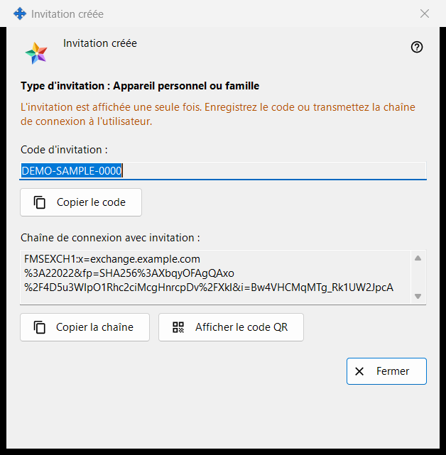
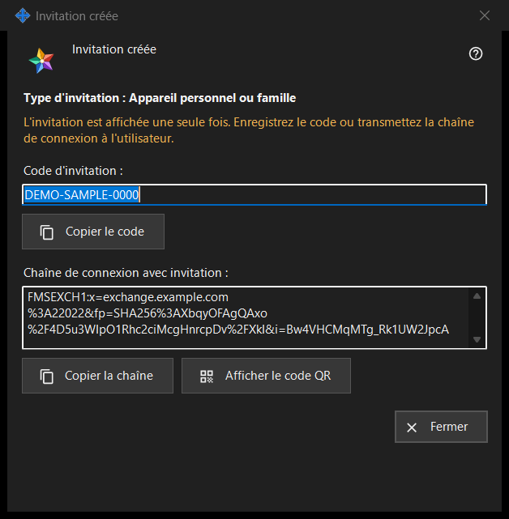

Invitation créée
Objectif
Cette fenêtre affiche une nouvelle invitation une seule fois, juste après «Créer» dans la fenêtre «Créer une invitation». Elle contient le code à usage unique et, quand le programme du serveur d'échange peut la créer, une chaîne de connexion qui contient déjà le code.


Dans cet ordre
- Vérifiez la ligne «Type d'invitation : ..».
- Cliquez sur «Copier le code», ou sur «Copier la chaîne» pour la chaîne avec l'invitation, ou sur «Afficher le code QR».
- Transmettez le résultat à la personne par un canal de confiance.
- Cliquez sur «Fermer». Le même code n'est plus affiché.
Les éléments
Type et avertissement
La ligne en gras «Type d'invitation : Appareil personnel ou famille» indique le type choisi. La ligne de la couleur d'avertissement dit «L'invitation est affichée une seule fois. Enregistrez le code ou transmettez la chaîne de connexion à l'utilisateur.» Quand la fenêtre se ferme, le code et la chaîne en sont effacés. Si l'un des deux est perdu, révoquez l'invitation dans la liste et créez-en une nouvelle.
Code d'invitation
«Code d'invitation :» affiche le code dans un champ en lecture seule. «Copier le code» le copie comme un secret, sans passer par l'historique du presse-papiers de Windows (Win+V) ni par le presse-papiers cloud, et la ligne en dessous indique «Code d'invitation copié dans le presse-papiers.» ou «Impossible de copier le code dans le presse-papiers.»
Chaîne de connexion avec l'invitation
«Chaîne de connexion avec invitation :» n'apparaît que si la chaîne a pu être créée. Elle désigne le serveur et porte le code ; traitez-la donc comme le code : «Copier la chaîne» la copie aussi comme un secret. Elle ne contient pas le mot de passe de votre compte.
Code QR
«Afficher le code QR» ouvre une image de la chaîne avec l'invitation. Quiconque la voit peut utiliser l'invitation ; ne la montrez donc qu'à la personne à qui elle est destinée. Si l'image ne peut pas être créée, la ligne indique «Le code QR n'est pas disponible pour le moment.»
Ce que fait l'autre personne
Dans la fenêtre du compte d'échange («Se connecter..»), la personne colle la chaîne avec «Coller» ou ouvre un fichier enregistré. Une chaîne qui contient une invitation fait passer la fenêtre en mode inscription : la personne choisit un identifiant, saisit deux fois un mot de passe et clique sur «Créer le compte». Une invitation erronée ou déjà utilisée, ou un identifiant déjà pris, est refusé avec un message.
Fermer
«Fermer» termine la fenêtre et en efface le code et la chaîne. Rien d'autre n'est enregistré ici.
Paramètres du gestionnaire · Paramètres de partage SFTP · Paramètres du serveur d’échange